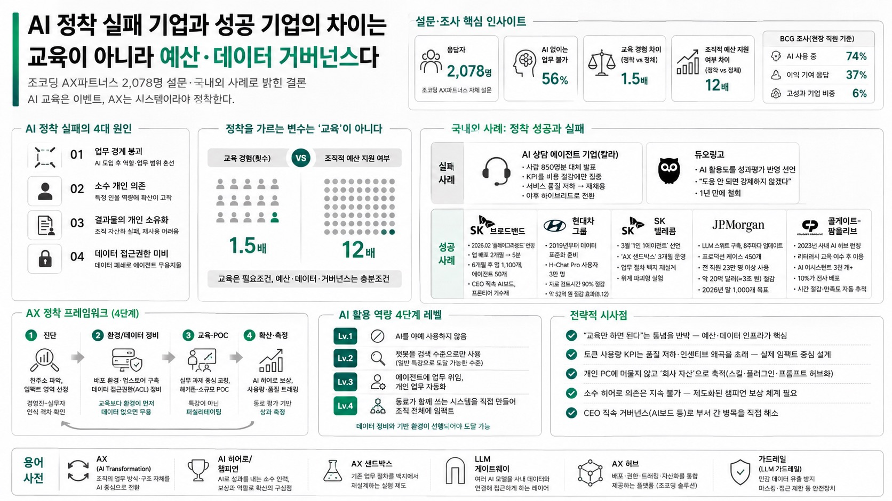

조코딩 AX파트너스가 2,078명 설문·국내외 사례로 밝힌 결론 — AI 교육은 이벤트, AX는 시스템이라야 정착한다.

01핵심 개요
조코딩 AX파트너스 자체 설문 2,078명 응답 기반, AI "도입"과 "정착"의 간극을 데이터로 분석
응답자 56%가 "AI 없이는 업무 불가"라고 답할 만큼 개인 사용은 이미 보편화
정착 기업과 정체 기업의 교육 경험 차이는 1.5배에 불과하지만, 조직적 예산 지원 여부 차이는 12배
BCG 조사 인용: 현장 직원 74% AI 사용 중이나 이익 기여 응답 37%, 고성과 기업 비중 6%뿐
SK브로드밴드·현대차그룹·SK텔레콤·JP모건·콜게이트-팜올리브 등 5개 기업 실제 사례로 해법 제시
02핵심 주장 / 논점 구조
발표자(조동근·문경원 공동대표)는 "왜 우리 회사는 안 되고, 되는 회사는 무엇이 다른가"라는 질문을 프레임으로 설정
1부: 설문 데이터로 정착 실패의 4대 원인(업무 경계 붕괴, 소수 개인 의존, 결과물의 개인 소유화, 데이터 접근권한 미비)을 규명
2부: 교육량 자체는 정착 여부를 가르는 변수가 아니며, "조직적 예산 지원"과 "데이터·환경 정비"가 실질 병목이라는 역설을 통계로 증명
3부: SK브로드밴드·현대차·SK텔레콤·JP모건·콜게이트-팜올리브 등 국내외 성공 사례 비교를 통해 공통 패턴(배포환경+데이터개방+거버넌스) 도출
4부: 자사 솔루션 "AX 허브"를 프레임워크의 실행 수단으로 제시하며 진단→환경정비→교육/POC→확산→측정의 순환 구조 강조
결론: "교육은 이벤트, AX는 시스템"이라는 제목 메시지로 수렴 — 일회성 특강이 아니라 지속 가능한 조직 구조가 필요
03AX 도입 실패 사례와 성공 사례
실패 사례 1 — AI 상담 에이전트 기업(발표자 발음상 "칼라"): CEO가 AI 에이전트로 사람 850명분 업무 대체를 발표했으나, KPI를 비용 절감에만 집중한 결과 서비스 품질이 저하되어 결국 재채용. 이후 단순업무는 AI, 복잡·프리미엄 업무는 사람이 맡는 하이브리드 방식으로 전환
실패 사례 2 — 듀오링고: CEO가 AI 활용도를 성과평가에 반영하겠다고 선언해 화제가 됐지만, "도움이 안 되는데 강제하지 않겠다"며 1년 만에 철회
성공 사례 1 — SK브로드밴드: 2026년 2월 사내 플랫폼 "플레이그라운드" 런칭, 앱 배포기간을 2개월에서 5분으로 단축. 6개월 뒤(8월) 앱 1,100개·에이전트 50개 생성(임직원 약 2,500명 중 다수 참여). CEO 직속 AI보드가 병목 해소, 프론티어 기수제로 멘토링 구조 운영
성공 사례 2 — 현대자동차그룹: 2019년부터 데이터 표준화 준비, LLM 게이트웨이 "H-Chat Pro" 사용자 3만 명, 자료 검토시간 90% 절감, 약 52억 원 절감 효과를 8월 12일 발표. 정의선 회장 등 경영진이 직접 바이브 코딩 교육을 받으며 솔선수범
성공 사례 3 — SK텔레콤: 3월 "1인 1에이전트" 선언, 업무 절차를 백지에서 재설계하는 "AX 샌드박스" 3개월 운영, 위계 파괴형 실험
성공 사례 4 — JP모건: 데이터 분석 총괄이 주도해 LLM 스위트 구축, 8주마다 업데이트하며 프로덕션 유지 케이스 450개. 전 직원 23만 명 이상 사용, 약 20억 달러(약 3조 원) 절감 효과. 2026년 말 1,000개 케이스 목표
성공 사례 5 — 콜게이트-팜올리브: 2023년 사내 AI 허브 런칭, 필수 리터러시 교육 이수 후 이용 허용. 3천 개 이상 AI 어시스턴트 생성, 그중 10%가 사업 전체에 배포되어 사용자 시간 절감·만족도를 자동 추적
04전략적 의미
"교육만 하면 된다"는 통념을 통계로 반박 — 정착 여부를 가르는 것은 교육 횟수가 아니라 조직적 예산 배정과 데이터 인프라
KPI를 단순 비용 절감이나 토큰 사용량으로 설정하면 품질 저하·인센티브 왜곡(불필요한 작업에 토큰 소모)으로 이어져 오히려 역효과
결과물이 개인 PC에 머물지 않고 "회사 자산"으로 축적되는 구조(스킬·플러그인·프롬프트 허브화)가 지속가능성의 핵심
특정 개인(소수 히어로)에게 의존하는 확산 구조는 그 사람이 지치거나 퇴사하면 함께 멈추는 리스크를 내포 — 챔피언 보상 체계로 제도화 필요
05AX 정착 프레임워크 (4단계)
단계
내용
핵심 포인트
1. 진단
조직의 AI 활용 현주소 파악, 임팩트 낼 영역 선정
경영진과 실무자의 인식 격차 확인
2. 환경/데이터 정비
배포 환경(앱스토어형 플랫폼)과 데이터 접근권한(ACL) 정비
"교육보다 환경이 먼저" — 데이터 없으면 에이전트도 무용
3. 교육·POC
실무 과제 중심 코칭, 해커톤, 소규모 팀 단위 시범 적용
특강이 아닌 퍼실리테이팅(담당자가 직접 붙어 문제 해결 지원)
4. 확산·측정
AI 히어로 발굴·보상, 사용량·품질 트래킹, 동료 평가
우아한형제들의 "우아톤" AI 1차 스크리닝 + 동료 평가 사례 참고
06AI 활용 역량 4단계 레벨
레벨 1: AI를 아예 사용하지 않음
레벨 2: 챗봇을 검색 수준으로만 사용 — 일반 특강으로 도달 가능한 수준
레벨 3: 에이전트에 업무를 위임해 개인 업무를 자동화
레벨 4: 동료가 함께 쓰는 시스템을 직접 만들어 조직 전체에 임팩트를 미침 — 이 단계에 도달하려면 데이터 정비와 기반 환경이 선행되어야 함
07활용 시나리오
경영진: CEO 직속 거버넌스 조직(AI보드 등)을 신설해 부서 간 병목을 직접 해소하고, 소규모 팀(예: 재무팀) 단위 시범 적용 후 성과를 근거로 전사 확산을 설득
인사/평가 담당자: 한글과컴퓨터(전 직무 AX 업무혁신 KPI 반영), LG CNS(AI 역량 기술 인증과 승진 연계) 사례처럼 AI 활용도를 평가 체계에 편입하되, 토큰 사용량이 아닌 실제 활용 방식·동료 평가 기반으로 설계
비개발자 실무자: 개발 지식보다 본인 업무 워크플로우에 대한 도메인 지식이 더 중요 — 해커톤 등에서 직접 워크플로우에 에이전트를 적용해보는 실습이 효과적
공공·보수적 조직: 경영진의 명확한 의지 표명과 함께, 조직 내 AI를 적극 활용하는 "AI 히어로"를 선별해 보상하고 확산 역할을 부여하는 방식이 합의 지연 문제를 우회하는 데 효과적
08현황 및 전망
국내 대기업(SK브로드밴드, 현대차그룹, SK텔레콤)과 해외 기업(JP모건, 콜게이트-팜올리브)이 공통적으로 "LLM 게이트웨이/허브 + 데이터 개방 + 배포 환경"의 3요소를 갖추는 방향으로 수렴
AI 활용 역량을 정량 평가하는 "AI 자격증" 수요가 커지고 있으며, 조코딩 AX파트너스도 기업·개인 단위 AI 역량 평가(POC)를 진행 중
개인 지식·메모리를 통째로 RAG로 구축하는 방식은 검색 품질 저하로 성공 사례가 드물다는 것이 발표자의 평가 — 스킬·플러그인 단위로 필요한 데이터만 선별하는 방식이 더 현실적 대안으로 제시됨
아낀 시간을 다시 업무에 투입해 더 큰 임팩트를 내는 기업과 그렇지 못한 기업 간의 격차가 향후 더 벌어질 것이라는 전망 제시
09용어 사전
AX(AI Transformation): 단발성 AI 교육을 넘어 조직의 업무 방식·구조 자체를 AI 중심으로 전환하는 것을 지칭하는 용어
AI 히어로/챔피언: 조직 내에서 AI를 적극적으로 활용해 성과를 내는 소수 인력. 보상과 역할을 부여해 확산의 구심점으로 삼는 대상
AX 샌드박스: SK텔레콤이 도입한 개념으로, 기존 업무 절차를 백지 상태에서 재설계해보는 실험 제도
LLM 게이트웨이: 여러 AI 모델(ChatGPT, Gemini, Claude 등)을 사내 데이터와 연결해 직원이 손쉽게 접근하게 하는 레이어. 현대차의 H-Chat Pro, JP모건의 LLM 스위트가 해당
AX 허브: 조코딩 AX파트너스가 제공하는 자체 솔루션으로, 배포 환경·데이터 권한 정책·사용량 트래킹·스킬/플러그인 자산화 기능을 통합 제공
가드레일(LLM 가드레일): 민감 데이터의 외부 유출을 막기 위한 마스킹·접근 제한 등 안전장치. 데이터 ACL(접근제어목록)과 함께 보안 정책의 핵심 요소